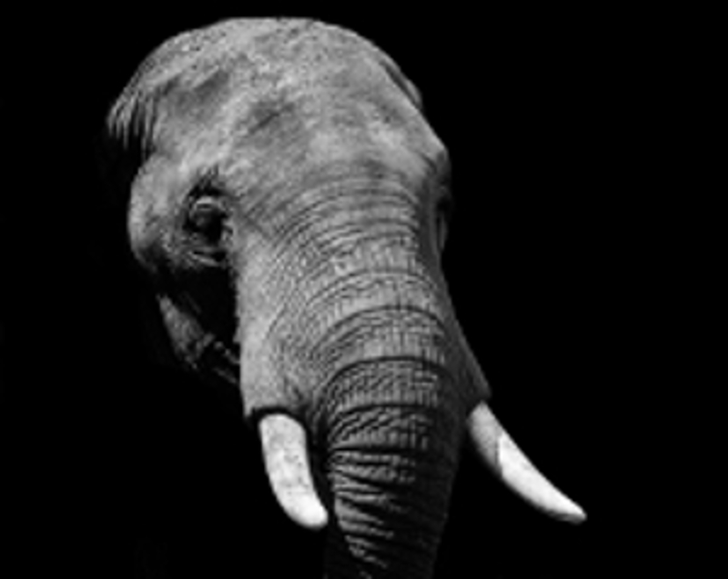

African elephants are elephants of
the genus Loxodonta. The genus consists of two extant species:
the African bush elephant, L. africana, and
the smaller African forest elephant, L. cyclotis. Loxodonta is
one of two existing genera of the family Elephantidae. Fossil remains of
Loxodonta have been found only in Africa, in strata as old as the middle
Pliocene. However, sequence analysis of DNA extracted from fossils of the
extinct straight-tusked elephant undermines the validity of the genus.
Physiology
One species of African elephant, the bush
elephant, is the largest living terrestrial animal, while
the forest elephant is the third-largest. Their thickset
bodies rest on stocky legs, and they have concave backs.
Their large ears enable heat loss. The upper lip and
nose form a trunk. The trunk acts as a fifth limb, a sound
amplifier, and an important method of touch. African elephants'
trunks end in two opposing lips, whereas the Asian elephant
trunk ends in a single lip. In L. africana, males stand
3.2–4.0 m tall at the shoulder and weigh 4,700–6,048 kg, while
females stand 2.2–2.6 m tall and weigh 2,160–3,232 kg.
Teeth
Elephants have four molars; each weighs about 5 kg (11 lb) and
measures about 30 cm (12 in) long. As the front pair wears down
and drops out in pieces, the back pair
moves forward, and two new molars emerge in the back of the
mouth. Elephants replace their teeth four to six times in their
lifetimes. Around 40 to 60 years of age, the elephant loses the
last of its molars and will likely die of starvation, a common
cause of death. African elephants have 24 teeth in total, six on
each quadrant of the jaw. The enamel plates of the molars are
fewer in number than in Asian elephants.
The elephants' tusks are firm teeth; the second set of incisors
become the tusks. They are used for digging for roots and stripping
the bark from trees for food, for fighting each other during mating
season, and for defending themselves against predators. The tusks
weigh from 23–45 kg and can be from 1.5–2.4 m long. Unlike Asian
elephants, both male and female African elephants have tusks. They
are curved forward and continue to grow throughout the elephant's
lifetime.
Habitat
African elephants are found widely in Sub-Saharan
Africa, in dense forests, mopane and miombo woodlands, Sahelian
scrub, or deserts.
Behaviour
African elephant societies are arranged around family units.
Each family unit is made up of around ten closely related
females and their calves and is led by an older female known as
the matriarch. When separate family units bond, they form
kinship or bond groups. After puberty, male elephants tend to
form close alliances with other males.
Elephants are at their most fertile between the ages of 25 and 45.
Calves are born after a gestation period of up to nearly two
years. The calves are cared for by their mother and other young
females in the group, known as allomothers.
Elephants use some vocalisations that are beyond the hearing range of
humans, to communicate across large distances. Elephant mating
rituals include the gentle entwining of trunks.
Feeding
While feeding, elephants use their trunks to pluck at leaves and
their tusks to tear at branches, which can cause enormous damage to
foliage. A herd may deplete an area of foliage depriving other
herbivores for a time. African elephants may eat up to 450 kg
of vegetation per day, although their digestive system is
not very efficient; only 40% of this food is properly digested. The
foregut fermentation used by ruminants is generally considered more
efficient than the hindgut fermentation employed by proboscideans
and perissodactyls; however, the ability to process food more
rapidly than foregut fermenters gives hindgut fermenters an advantage
at very large body size, as they are able to accommodate significantly
larger food intakes.
Intelligence
African elephants are highly intelligent, and they have a very large
and highly convoluted neocortex, a trait they share with humans,
apes and some dolphin species. They are amongst the world's most
intelligent species. With a mass of just over 5 kg (11 lb), elephant
brains are larger than those of any other land animal, and although the
largest whales have body masses twentyfold those of a typical elephant,
whale brains are barely twice the mass of an elephant's brain. The
elephant's brain is similar to that of humans in terms of structure and
complexity. For example, the elephant's cortex has as many neurons as
that of a human brain,suggesting convergent evolution.
Elephants exhibit a wide variety of behaviors, including those
associated with grief, learning, allomothering, mimicry, art, play,
a sense of humor, altruism, use of tools, compassion, cooperation,
self-awareness, memory and possibly language. All point to a highly
intelligent species that is thought to be equal with cetaceans, and
primates.
Reproduction
African elephants show sexual dimorphism in weight and shoulder
height by age 20, due to the rapid early growth of males. By age 25,
males are double the weight of females; however, both sexes continue
to grow throughout their lives.
Female African elephants are able to start reproducing at around 10
to 12 years of age, and are in estrus for about 2 to 7 days. They do
not mate at a specific time; however, they are less likely to
reproduce in times of drought than when water is plentiful. The
gestation period of an elephant is 22 months and fertile females
usually give birth every 3 – 6 years, so if they live to around 50
years of age, they may produce 7 offspring. Females are a scarce
and mobile resource for the males so there is intense competition
to gain access to estrous females.
Post sexual maturity, males begin to experience musth, a physical and
behavioral condition that is characterized by elevated testosterone,
aggression and more sexual activity. Musth also serves a purpose of
calling attention to the females that they are of good quality, and
it cannot be mimicked as certain calls or noises may be. Males sire
few offspring in periods when they are not in musth. During the
middle of estrus, female elephants look for males in musth to guard
them. The females will yell, in a loud, low way to attract males
from far away. Male elephants can also smell the hormones of a
female ready for breeding. This leads males to compete with each
other to mate, which results in the females mating with older,
healthier males. Females choose to a point who they mate with,
since they are the ones who try to get males to compete to guard
them. However, females are not guarded in the early and late stages
of estrus, which may permit mating by younger males not in musth.
Males over the age of 25 compete strongly for females in estrous,
and are more successful the larger and more aggressive they are.
Bigger males tend to sire bigger offspring. Wild males begin
breeding in their thirties when they are at a size and weight that
is competitive with other adult males. Male reproductive success is
maximal in mid-adulthood and then begins to decline. However, this
can depend on the ranking of the male within their group, as
higher-ranking males maintain a higher rate of reproduction. Most
observed matings are by males in musth over 35 years of age.
Twenty-two long observations showed that age and musth are extremely
important factors; "… older males had markedly elevated paternity
success compared with younger males, suggesting the possibility of
sexual selection for longevity in this species." (Hollister-Smith,
et al. 287)
Males usually stay with a female and her herd for about a month
before moving on in search for another mate. Less than a third of
the population of female elephants will be in estrus at any given
time and gestation period of an elephant is long, so it makes more
evolutionary sense for a male to search for as many females as
possible rather than stay with one group.
Conservation

During the 20th century, poaching significantly reduced the
population of Loxodonta in some regions. The World Wide Fund for
Nature believes there were between 3 and 5 million African elephants
as recently as the 1930s and 1940s. Between 1980 and 1990 the
population of African elephants was more than halved, from 1.3
million to around 600,000. Between 1973 and 1989, the African
elephant population of Kenya declined by 85%. In Chad, the
population declined from 400,000 in 1970 to about 10,000 in 2006.
The population in the Tanzanian Selous Game Reserve, once the
largest of any reserve in the world, dropped from 109,000 in 1976
to 13,000 in 2013. The government of Tanzania estimated that more
than 85,000 elephants were lost to poaching in Tanzania between
2009 and 2014, representing a 60% loss.
In 1989, CITES (Convention on International Trade in Endangered
Species of Wild Fauna and Flora) banned international trade in
ivory to fight this massive illegal trade. After the ban came into
force in 1990, major ivory markets were eliminated. As a result,
African elephant populations experienced a decline in illegal
killing, particularly where they were appropriately protected.
This allowed some elephant populations to recover. Nevertheless,
within countries where wildlife management authorities are greatly
under-funded, poaching is still a significant problem.
The World Wildlife Foundation states that the two threats that impact
African elephants the most are the demand for ivory and changes in
land usage. The majority of the ivory leaving Africa continues to be
acquired and transported illegally, and over 80% of all the raw
ivory traded comes from poached African elephants. From 2006 to
2012 the magnitude of poaching increased (including some 3,000
elephants slaughtered in between 2006 and 2009). In an incident
lasting a few days in February 2012 in Bouba N'Djida park in
Cameroon, 650 elephants were poached. In early March 2013 in Chad,
86 elephants — including 33 pregnant females — were killed in
"a potentially devastating blow to one of central Africa's last
remaining elephant populations."By 2014 it was estimated that only
50,000 elephants remained in Central Africa. The last major
populations are present in Gabon and the Republic of Congo.
According to the World Wildlife Fund, in 2014 the total population of
African elephants was estimated to be around 700,000, and the Asian
elephant population was estimated to be around 32,000. The
population of African elephants in Southern Africa is large and
expanding, with more than 300,000 within the region; Botswana has
200,000 and Zimbabwe 80,000. Large populations of elephants are
confined to well-protected areas. However, conservative estimates
were that 23,000 African elephants were killed by poachers in 2013
and less than 20% of the African elephant range was under formal
protection. The International Union for Conservation of Nature
released a report in September 2016 that estimates Africa's
elephant population at 415,000. They reported that in the past
decade, this is a decline of 111,000 elephants. This is reported
as the worst decline in the past 25 years.
Between the African elephants and the Asian elephants there is a
large variance in genetics; also, within Africa the different
species vary in genetics based on where they live. The two African
species, Loxodonta africana and Loxodonta cyclotis, share different
gene flow and have limited hybridization with each other.
When examining the gene flow between the forest and savanna elephants,
observers look at 21 distinct locations. The evidence points to
the fact that there was ancient hybridization since the species
share a small amount of similar DNA.
Legal Status and Conservation
Protection of African elephants is a high-profile conservation cause
in many countries. In 1989, the Kenyan Wildlife Service burned a
stockpile of tusks in protest against the ivory trade. However,
African elephant populations can be devastated by poaching despite
nominal governmental protection, and some nations permit the
hunting of elephants for sport. In 2012, The New York Times
reported a large upsurge in ivory poaching, with about 70% of the
product flowing to China.
Conflicts between elephants and a growing human population are a
major issue in elephant conservation. Human encroachment into
natural areas where bush elephants occur or their increasing
presence in adjacent areas has spurred research into methods of
safely driving groups of elephants away from humans. Playback of
the recorded sounds of angry honey bees has been found to be
remarkably effective at prompting elephants to flee an area. The
International Union for Conservation of Nature (IUCN) African
elephant specialist group has set up a human-elephant conflict
working group. They believe that different approaches are needed
in different countries and regions, and so develop conservation
strategies at national and regional levels.
Under the auspices of the Convention on Migratory Species of Wild
Animals (CMS), also known as the Bonn Convention, a Memorandum of
Understanding concerning Conservation Measures for the West African
Populations of the African Elephant came into effect on 22 November
2005. The MoU aims to protect the West African elephant population
by providing an international framework for state governments,
scientists and conservation groups to collaborate in the
conservation of the species and its habitat.
China was the biggest market for poached ivory but announced that
it would phase out the legal domestic manufacture and sale of ivory
products in , and in September of that year,
China and the U.S.A. "said they would enact a nearly complete ban on the import
and export of ivory."In response Chinese consumers moved to
purchasing their ivory through markets in Laos, leading conservation
groups to request pressure be put on Laos to end the trade.